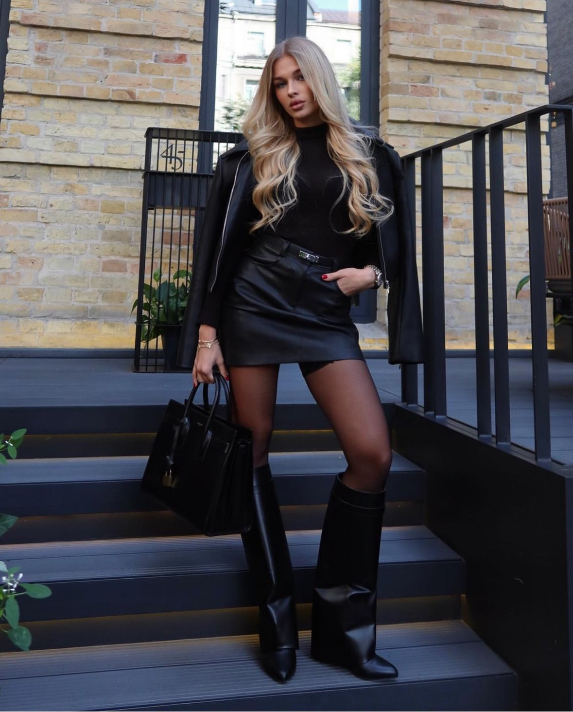
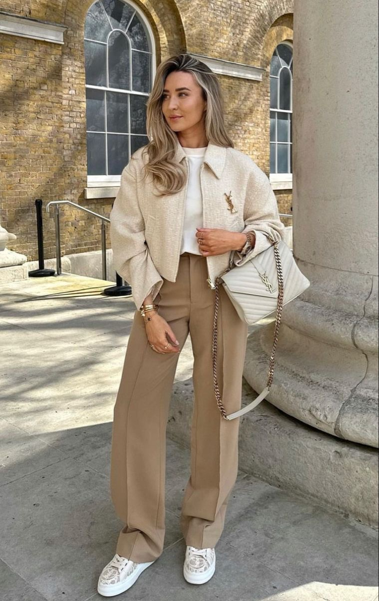
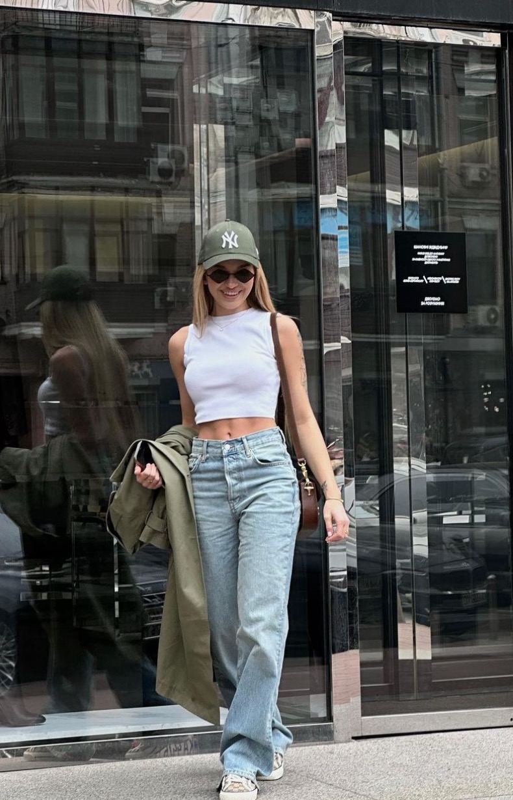
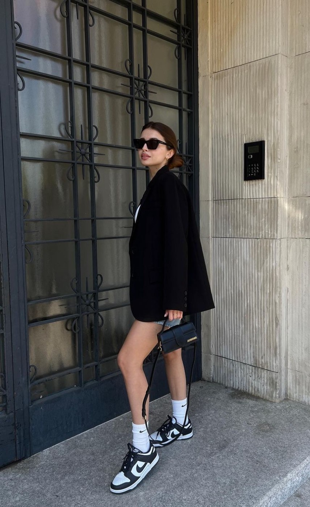
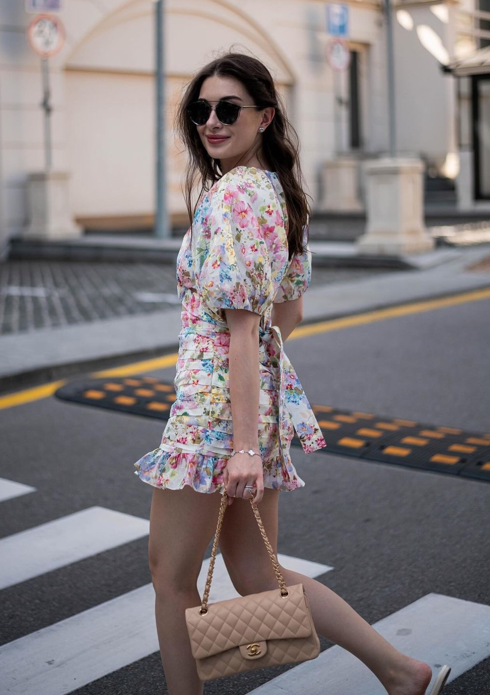
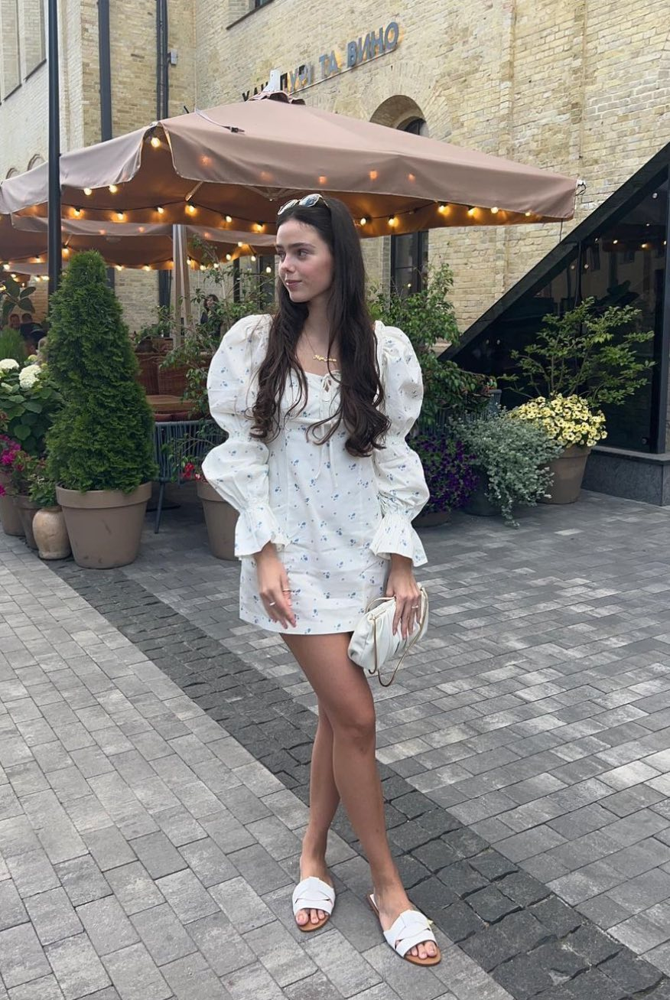

............................................................................................................................................................................................................................
Діловий стиль — один зі стилів одягу, призначений для ділової сфери життя суспільства і характеризується строгістю, стриманістю і консерватизмом у виборі тканини, кольору, крою і аксесуарів. Близький до консервативного стилю. Дуже скупо підпорядковується віянням моди, тому практично не змінився з початку XX століття. Діловий стиль одягу не допускає недбалості, неохайності, пом'ятости або потертості. Всі шви повинні бути ідеально прострочені. В формальному діловому середовищі стандартом одягу для чоловіків і жінок є костюм, піджак, штани, спідниця або плаття в поєднанні з відповідними аксесуарами.
 ............................................................................................................................................................................................................................
Кежуел — повсякденний стиль, частіше це поняття стосується одягу, рідше зачіски чи аксесуарів. В європейській традиції — вид одягу, стиль, котрий насамперед є комфортним. Основними рисами стилю casual є практичність, зручність, простота силуетів, невимушеність поєднань, а також багатошаровість. В цьому стилі вдягаються гіпстери, моделі поза роботою, більшість знаменитостей та деякі люди похилого віку. Стиль casual підходить для ділових зустрічей, роботи в офісі, походів до театру, на побачення або до нічного клубу. Основу гардеробу складають джинси і пуловери, футболки і толстовки, сорочки і брюки та хитромудрі сукні і спідниці.
 ............................................................................................................................................................................................................................
Спортивний одяг - це зручність, легкість і стиль. Вона дозволяє комфортно відчувати себе в будь-який сезон при різних навантаженнях, захищає від негоди і травм, а ще дуже стильно і красиво виглядає.До середини ХІХ ст., коли зародився сучасний спорт, спеціального одягу практично не було. Спорт був розвагою, а не змаганням, тому спеціальна екіпіровка не була потрібна, використовували повсякденний одяг, який модифікували. Тільки для верхової їзди і полювання виготовляли, який був призначений для цих занять. Але він був не стільки зручним, як елегантним. Одними з перших спортивною формою стали користуватися гравці у футбол і крикет, але це було продиктовано лише командною специфікою гри: щоб гравці однієї команди в процесі змагання могли швидко вирізняти один одного в загальній масі. Появі спортивного одягу наприкінці XIX ст. сприяв розвиток клубів за інтересами. Клуб, як правило, поєднував людей одного соціального стану, для яких спортивна уніформа являла собою можливість ідентифікувати себе зі своєю референтною групою. Діяльність членів клубу ніколи не регулювалася спеціальними розпорядженнями, але відбивала уявлення людей про свій статус. Тому одним з головних завдань костюма для спортсменів, об'єднаних у клубах, федераціях та асоціаціях, було підкреслення соціальної приналежності і дотримання світських манер та пристойності. Що стосується комфорту і функціональності, то на початковому етапі еволюції спортивного одягу такого роду завдання ще не ставилися. В обраних видах спорту, призначених для представників аристократії, елегантність речей була головною якістю, навіть на шкоду зручності і практичності.
.............................................................................................................................................................................................................................
Романтичний стиль в одязі передбачає створення піднесеного, витонченого образу.Найбільше розповсюдження мода романтизму отримала у 1980-і рр. Легендарна принцеса Діана з'являлася у неперевершених образах, які ідеально уособлювали витонченість, чуттєвість та ніжність. Її розкішна весільна сукня – один з шедеврів romantic style. Потім цими ідями надихались численні дизайнери при створенні нових колекцій.Головний недолік романтичного модного одягу – це те, що він не може бути повсякденним і не підійде для тих, хто любить активно відпочивати. Також у цьому стилі неможливо створити діловий образ. Хоча, наприклад, поєднання офісного костюму і романтичної блузи буде виглядати дуже ефектно.
 ............................................................................................................................................................................................................................